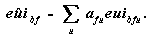

Overview
End-Use Estimation Methodology--1995
The end-use estimates had two main sources: (1) survey data collected by the Commercial
Buildings Energy Consumption Survey (CBECS) and (2) building energy simulations provided
by the Facility Energy Decision Screening (FEDS) system. The CBECS provided data on
building characteristics and total energy consumption (i.e., for all end uses) for a national sample
of commercial buildings. Using data collected by the CBECS, the FEDS engineering modules
were used to produce estimates of energy consumption by end use. The FEDS engineering
estimates were then statistically adjusted to match the CBECS total energy consumption.
This note briefly describes the FEDS load estimation methodology, the statistical adjustment
procedure, and the remaining steps necessary to produce the final end-use estimates.

The Facility Energy Decision Screening Engineering
Estimates
The energy consumption data provided by energy suppliers cover all end uses performed within
commercial buildings. The total energy consumption can be disaggregated into end-use
consumption by several approaches: engineering simulations, statistical modeling, or a hybrid
approach known as statistically adjusted engineering (SAE). The CBECS end-use estimates
were developed by using the SAE approach, with the FEDS system providing the initial
engineering estimates.
The FEDS software was developed for the Department of Energy's Federal Energy Management
Program and the U.S. Army Construction Engineering Research Laboratory as a tool
for screening groups of buildings on federal facilities (such as Army bases) for energy efficiency
retrofits. The engineering modules, which estimate the energy load to
be subjected to retrofit optimization, are one in a series of well-known building energy
simulations, which include DOE-2 and ASEAM. The FEDS uses high-level installation
information (number, age, size, and types of buildings and energy systems), an internal data base
of typical energy-system configurations and performance data, and sophisticated energy
simulation and optimization models to estimate the net present value of potential energy retrofits
in federal installations.
The FEDS engineering models are designed to produce estimates for five end uses: space
heating, cooling, ventilation, lighting, and water heating. Two other end uses, cooking and
refrigeration, are also calculated internally by the model, although they are not part of the
normal FEDS output. These seven end uses, plus an "other" end use, represent the FEDS
accounting for total building end use. Estimates for office equipment energy use were not
provided by the FEDS model.
Estimates for the first five end uses are based on detailed building engineering simulations.
Estimates for the latter two are more sketchy and rely on parameters developed in the Regional
End-Use Monitoring Program (REMP, formerly known as the End-Use Load and Consumer
Assessment Program (ELCAP)) study. REMP was a large end-use
monitoring project sponsored by the Bonneville Power Administration. As designed to be used
in facilities, only a general description of a building need be input for the building energy loadsto be estimated interactively, relying on an extensive series of internal default values. Some of
these defaults were based on data from prior CBECS but many were based on REMP study. For
use with the CBECS, the FEDS interface was changed from interactive to batch, with the
CBECS survey data supplying as many values as possible.
Besides values relating to the building characteristics, the engineering estimates also required
hourly weather profiles. For each calendar month, the average temperature, humidity, and cloudiness during each hour of
the day were calculated and input to the model.
Statistically Adjusted Engineering Estimates
The FEDS estimates were based on building characteristics and weather only. At the statistically
adjusted engineering (SAE) stage, the engineering estimates were modified to match the
observed
CBECS consumption data. The basic idea behind the SAE method is simple. Let
euibfu be the end-use
consumption per square foot estimated by the FEDS model for building b, fuel f,
and end use u, and
let euibf be the total energy consumption (from the CBECS Energy
Suppliers Survey) per square foot for building b and fuel
f. Then a set of coefficients afu can be estimated statistically, i.e.,
by multiple regression, such that

The coefficients adjust the FEDS engineering estimates upward or downward to match the
reported energy use. The
eûibf are referred to as SAE estimates. If each estimated value of
afu
is equal to one, the EUIs are the same as
those calculated in the engineering model. A value other than one can reflect a variety of
factors. The FEDS model
assumed values for a number of engineering variables on the basis of a typical or average
building. If the
characteristics within the sample buildings differ on average from the assumed values, then the
actual EUIs will
diverge from the engineering EUIs.
The basic SAE equation stated above assumes that there is a constant bias in the engineering
estimates. However, the assumption of constant bias may be inappropriate. The bias may vary
along a number of dimensions. Building type, building age, occupant density, and the presence
of energy-intensive activities within the building were some of the variables examined to explore
the patterns of bias. A nonlinear SAE equation was developed to incorporate these items. The
nonlinear framework allowed greater flexibility in the way that variables such as building age
and employment density could interact with the engineering estimates of end-use
consumption.
The SAE equations were estimated separately for: electricity, natural gas fuel oil, and district heat.
The Final End-Use Estimates
Because the SAE procedure calibrated the engineering estimates to the reported data for
aggregates of buildings, SAE estimates for individual buildings could still vary from the values
on the CBECS Master File. For the final end-use estimates, the value on the CBECS Master File
(whether reported or imputed) was prorated in proportion to the SAE estimates.
The office equipment estimate was also made after the SAE by using REMP estimates and estimates from Arthur D. Little, Inc. (ADL). The REMP database contains estimates for subcomponents of "other" end-use consumption and was used to estimate the office equipment share of
the "other" end use energy consumption for 1989 and 1992 CBECS. Included in office equipment were large computer
equipment (if the CBECS data indicated the presence of a computer area with a separate
air-conditioning system), personal computer equipment, and general office equipment
(typewriters, copiers, cash registers, etc.). For the 1995 CBECS, the REMP computer energy consumption estimates were replaced with the more recent ADL estimates before calculating the office equipment share.
View Tables
Return to the Consumption & Expenditures Appendix
B
 
File Last Modified: January 15, 1998
- Contact:
- alan.swenson@eia.doe.gov
- Alan Swenson
- End-Use Analyst
-
- Contact:
- Joelle Michaels
- joelle.michaels@eia.doe.gov
- CBECS Manager
-
URL: http://www.eia.gov/consumption/commercial/data/archive/cbecs/cbec-eu2.html
If you are having any technical problems with this site, please contact the EIA Webmaster at
wmaster@eia.doe.gov
|